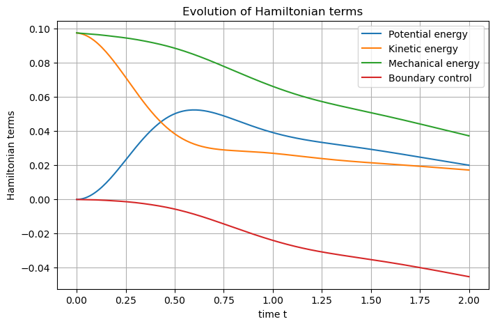

Another wave equation
file: examples/wave_coenergy.py
authors: Giuseppe Ferraro, Ghislain Haine
date: 22 nov. 2022
brief: wave equations in co-energy formulation, two sub-domains
- examples.wave_coenergy.wave_coenergy_eq()
A structure-preserving discretization of the wave equation with boundary control
Formulation co-energy, Grad-Grad, output feedback law at the boundary, damping on a subdomain
Setting
The objective of this example is to show how sub-domains may be used, and how substitutions reduce the computational burden: it assumes that this 2D wave example has already been studied.
Substitutions
The damped wave equation as a port-Hamiltonian system writes
where \(\alpha_q\) denotes the strain, \(\alpha_p\) is the linear momentum, \(e_q\) is the stress, \(e_p\) is the velocity and \((f_r,e_r)\) is the dissipative port.
This system must be close with constitutive relations, which are
where \(T\) is the Young’s modulus, \(\rho\) the mass density and \(\nu\) the viscosity. Inverting these relations and substituting the results in the port-Hamiltonian system leads to the co-energy formulation (or more generally co-state formulation)
At the discrete level, this allows to reduce the number of degrees of freedom by two.
Remark: In the example, \(\nu\) only acts on a sub-domain, i.e. it is theoretically null on the complementary, and thus is not invertible! To be able to invert it, it is then mandatory to restrict the dissipative port to the sub-domain where \(\nu>0\).
Simulation
Let us start quickly until the definition of the dissipative port.
# Import scrimp
import scrimp as S
# Init the distributed port-Hamiltonian system
wave = S.DPHS("real")
# Set the domain (using the built-in geometry `Concentric`)
# Labels: Disk = 1, Annulus = 2, Interface = 10, Boundary = 20
omega = S.Domain("Concentric", {"R": 1.0, "r": 0.6, "h": 0.1})
# And add it to the dphs
wave.set_domain(omega)
## Define the variables
states = [
S.State("q", "Stress", "vector-field"),
S.State("p", "Velocity", "scalar-field"),
]
# Use of the `substituted=True` keyword to get the co-energy formulation
costates = [
S.CoState("e_q", "Stress", states[0], substituted=True),
S.CoState("e_p", "Velocity", states[1], substituted=True),
]
# Add them to the dphs
for state in states:
wave.add_state(state)
for costate in costates:
wave.add_costate(costate)
In order to restrict the dissipative port to the internal disk, we use
the region keyword.
# Define the dissipative port, only on the subdomain labelled 1 = the internal disk
ports = [
S.Port("Damping", "e_r", "e_r", "scalar-field", substituted=True, region=1),
]
# Add it to the dphs
for port in ports:
wave.add_port(port)
The control port is only at the external boundary, labelled by 20 in SCRIMP.
# Define the control port
control_ports = [
S.Control_Port(
"Boundary control",
"U",
"Normal force",
"Y",
"Velocity trace",
"scalar-field",
region=20,
),
]
# Add it to the dphs
for ctrl_port in control_ports:
wave.add_control_port(ctrl_port)
The sequel is as for the already seen examples.
# Define the Finite Elements Method of each port
FEMs = [
S.FEM(states[0].get_name(), 1, "DG"),
S.FEM(states[1].get_name(), 2, "CG"),
S.FEM(ports[0].get_name(), 1, "DG"),
S.FEM(control_ports[0].get_name(), 1, "DG"),
]
# Add them to the dphs
for FEM in FEMs:
wave.add_FEM(FEM)
# Define physical parameters: care must be taken,
# in the co-energy formulation, some parameters are
# inverted in comparison to the classical formulation
parameters = [
S.Parameter(
"Tinv",
"Young's modulus inverse",
"tensor-field",
"[[5+x,x*y],[x*y,2+y]]",
"q",
),
S.Parameter("rho", "Mass density", "scalar-field", "3-x", "p"),
S.Parameter(
"nu",
"Viscosity",
"scalar-field",
"10*(0.36-(x*x+y*y))",
ports[0].get_name(),
),
]
# Add them to the dphs
for parameter in parameters:
wave.add_parameter(parameter)
Regarding the Brick objects, there is a major difference with the
previous examples: here, we need to list all the sub-domain labels
for the wave equation, hence the [1,2]. On the other hand, the
dissipation only occurs on the internal disk, labelled 1, and thus the
block matrices corresponding to the identity operators which implement
the dissipation must be restrict to [1].
# Define the pHs via `Brick` == non-zero block matrices == variational terms
# Since we use co-energy formulation, constitutive relations are already taken into
# account in the mass matrices M_q and M_p
bricks = [
## Define the Dirac structure
# Define the mass matrices from the left-hand side: the `flow` part of the Dirac structure
S.Brick("M_q", "q.Tinv.Test_q", [1, 2], dt=True, position="flow"),
S.Brick("M_p", "p*rho*Test_p", [1, 2], dt=True, position="flow"),
S.Brick("M_r", "e_r/nu*Test_e_r", [1], position="flow"),
S.Brick("M_Y", "Y*Test_Y", [20], position="flow"),
# Define the matrices from the right-hand side: the `effort` part of the Dirac structure
S.Brick("D", "Grad(p).Test_q", [1, 2], position="effort"),
S.Brick("-D^T", "-q.Grad(Test_p)", [1, 2], position="effort"),
S.Brick("I_r", "e_r*Test_p", [1], position="effort"),
S.Brick("B", "U*Test_p", [20], position="effort"),
S.Brick("-I_r^T", "-p*Test_e_r", [1], position="effort"),
S.Brick("-B^T", "-p*Test_Y", [20], position="effort"),
## Define the constitutive relations
# Already taken into account in the Dirac Structure!
]
# Add all these `Bricks` to the dphs
for brick in bricks:
wave.add_brick(brick)
The remaining part of the code have already been explain in previous examples.
## Initialize the problem
# The controls expression
expressions = ["0.5*Y"]
# Add each expression to its control_port
for control_port, expression in zip(control_ports, expressions):
# Set the control functions (automatic construction of bricks such that -M_u u + f(t) = 0)
wave.set_control(control_port.get_name(), expression)
# Set the initial data
wave.set_initial_value("q", "[0., 0.]")
wave.set_initial_value("p", "2.72**(-20*((x-0.5)*(x-0.5)+(y-0.5)*(y-0.5)))")
## Solve in time
# Define the time scheme ("cn" is Crank-Nicolson)
wave.set_time_scheme(ts_type="cn",
t_f=2.0,
dt_save=0.01,
)
# Solve
wave.solve()
## Post-processing
## Set Hamiltonian's name
wave.hamiltonian.set_name("Mechanical energy")
# Define each Hamiltonian Term
terms = [
S.Term("Potential energy", "0.5*q.Tinv.q", [1, 2]),
S.Term("Kinetic energy", "0.5*p*p*rho", [1, 2]),
]
# Add them to the Hamiltonian
for term in terms:
wave.hamiltonian.add_term(term)
# Plot the Hamiltonian and save the output
wave.plot_Hamiltonian(save_figure=True)
